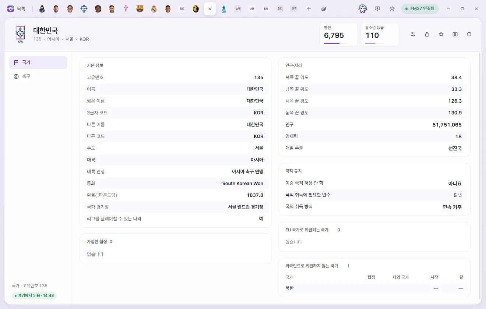
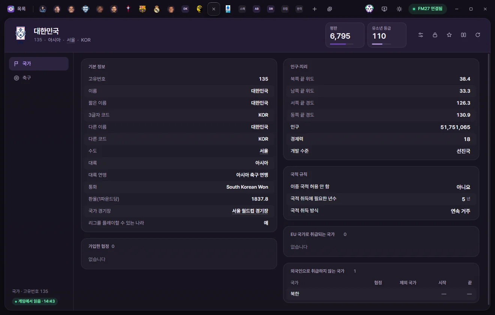
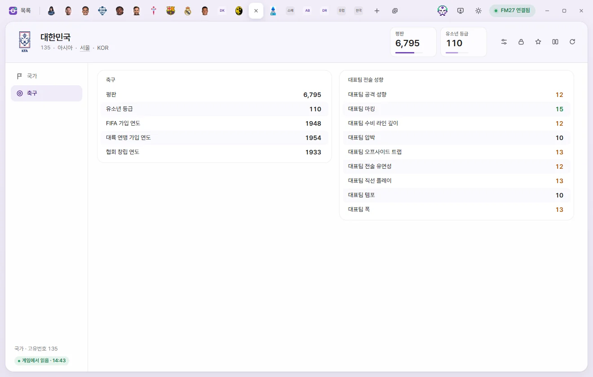

편집 탭
국가
나라의 국적 규칙, 인구·경제, 평판, 유소년 등급, 대표팀 전술 성향을 고치는 방법입니다.



탭 여는 법
국가 목록에서 이름을 누릅니다. 선수의 국적, 구단의 국가처럼 밑줄로 보이는 나라 이름을 눌러도 열립니다. 값 고치기와 저장은 선수 탭과 같습니다. 선수 페이지의 공통 설명
탭 머리
- 이름 아래에 고유번호, 대륙, 수도, 3글자 코드가 보입니다.
- 숫자 카드는 평판(1~10000)과 유소년 등급(0~200)입니다. 눌러서 바로 숫자를 칩니다.
- 오른쪽 단추는 프리셋, 고정, 즐겨찾기, 비교, 게임에서 다시 읽기입니다. 국가 탭에는 ⚡ 단추가 없습니다.
하위 페이지는 국가와 축구 2개입니다.
국가
기본 정보
모두 보기만 합니다.
| 칸 | 하는 일 |
|---|---|
| 고유번호, 이름, 짧은 이름, 3글자 코드, 다른 이름, 다른 코드 | 나라의 이름과 코드 |
| 수도 | 누르면 도시 탭이 열립니다 |
| 대륙, 대륙 연맹 | |
| 통화 | 이 나라의 통화 |
| 환율(1파운드당) | 이 나라 통화로 1파운드가 얼마인지(잉글랜드 1, 대한민국 1,837.8). FMLE는 이 값으로 금액을 설정에서 고른 통화로 바꿔 보여 줍니다 |
| 국가 경기장 | 누르면 경기장 탭이 열립니다 |
| 리그를 플레이할 수 있는 나라 | 켜진 59개국이 FM27에서 리그를 고를 수 있는 나라와 같아 보입니다 |
국적 규칙
| 칸 | 하는 일 | 고칠 수 있는 범위 |
|---|---|---|
| 이중 국적 허용 안 함 | 켜진 나라: 중국, 일본, 인도, 인도네시아, 우크라이나 등 | 예, 아니요 |
| 국적 취득에 필요한 년수 | 그 나라에서 몇 년을 살면 국적을 얻는지(잉글랜드 5, 스페인 10, 아르헨티나 2). 255(없음)는 국적을 얻을 수 없는 나라입니다 | 0~255년 |
| 국적 취득 방식 | 연속 거주(그 기간을 쭉 살아야 함), 누적 거주(나갔다 와도 합쳐서 셈). 게임 용어로는 '획득 국적 종류'입니다 | 선택지 |
| EU 국가로 취급되는 국가 | 한 줄이 국가 하나나 협정 하나입니다(국가, 협정, 제외 국가, 시작, 끝) | 보기만 |
| 외국인으로 취급하지 않는 국가 | 대한민국은 북한, 중국은 대만 선수를 외국인으로 치지 않습니다. 잉글랜드처럼 지역 단위로 정해진 줄은 아직 지역 이름을 읽지 못합니다 | 보기만 |
인구·지리
| 칸 | 하는 일 | 고칠 수 있는 범위 |
|---|---|---|
| 인구 | 0~20억 | |
| 북쪽 끝 위도, 남쪽 끝 위도, 서쪽 끝 경도, 동쪽 끝 경도 | 나라의 끝 위치 | 보기만 |
| 경제력 | 0~20 | |
| 개발 수준 | 선진국, 개발도상국, 최빈국 | 선택지 |
협정
가입한 협정 목록(협정, 가입, 탈퇴 날짜)입니다. 보기만 하고, 누르면 협정 탭이 열립니다.
축구


| 묶음 | 칸 | 고칠 수 있는 범위 |
|---|---|---|
| 축구 | 평판 | 1~10000 |
| 축구 | 유소년 등급 | 0~200 |
| 축구 | FIFA 가입 연도, 대륙 연맹 가입 연도, 협회 창립 연도 | 1850~2100 |
| 대표팀 전술 성향 | 대표팀 공격 성향, 수비 라인 깊이, 직선 플레이, 전술 유연성, 마킹, 오프사이드 트랩, 압박, 템포, 폭 | 1~20 |
대표팀의 스태프 자리는 이 탭이 아니라 스태프 탭 ⚡ 메뉴의 '대표팀에 넣기', '대표팀 계약 파기'로 다룹니다. 게임 에디터 (⚡)